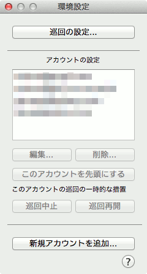
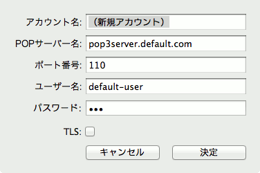
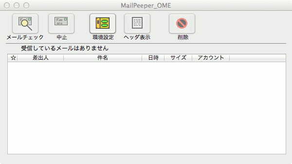
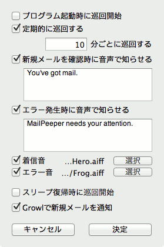
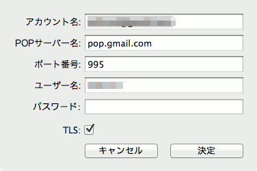

最初にすべきこと
mailpeeper-tlsにはインストーラーはありません。好きな場所に置いて、ただちに御利用できます。
Mac OS Xなら「アプリケーション」または「Applications」などに置いておくとよいでしょう。
mailpeeper-tlsを使うにあたって、最初にすべきことは「アカウントの設定」です。
立ち上げて、メニューバーのアイコンをクリックし、メニューの「環境設定」を押してください。
すると以下のようなウィンドウがあらわれます。

このウィンドウの最も下についている「新規アカウントを追加」ボタンを押します。
すると、以下のようなアカウントを設定するための入力画面に変わります。

この画面で必要な情報を設定してください。設定の詳細はアカウントの設定を参考にしてください。
メインウィンドウ
Windowを表示を選択すると以下のようなウィンドウが現れます。
ほとんどの操作はウィンドウの上にあるボタンだけで行えます。

ボタンを押すと以下のような挙動をします。
●巡回 − メールサーバーにアクセスし、受信しているメールの一覧を表示します。
●巡回中止 − 巡回ボタンによって始めた処理を中止します。
●環境設定 − 環境設定ウィンドウを表示します。各種設定をしたい時に押します。
●ヘッダ表示 − 一覧で選択したメールのヘッダ部分を表示します。
●削除 − 一覧で選択したメールを削除します。
環境設定ウィンドウ
環境設定ボタンか環境設定メニューで以下のようなウィンドウが現れます。
ボタンを押すと以下のような挙動をします。
●巡回の設定 − 巡回に関する設定を行うため、巡回の設定画面を開きます。
●編集 − 選択されたアカウント設定を変更するため、アカウントの設定画面を開きます。
●削除 − 選択されたアカウントを削除します。
●このアカウントを先頭にする − 選択されたアカウントを最初に巡回させます。
●巡回中止 − 選択されたアカウントの巡回を一時的に中止します。
●巡回再開 − 一時的に中止したアカウントの巡回を再開させます。
●新規アカウントを追加 − 新規アカウントを追加し、アカウントの設定画面を開きます。
巡回の設定
環境設定ウィンドウで「巡回の設定」ボタンを押すと以下のような画面が開きます。

それぞれの項目で以下のような設定をします。
●プログラム起動時に巡回開始 − ここを有効にしておくとプログラム起動と同時にメールチェックをします。
●定期的に巡回する − ここを有効にしておくと指定した間隔（分単位）でメールチェックを繰り返します。
●新規メールを確認時に音声で知らせる − ここを有効にしておくと新規メール到着を音声で知らせます。
●エラー発生時に音声で知らせる − ここを有効にしておくとエラー発生時に、そのことを音声で知らせます。
● 着信音 − ここを有効にしておくと、新規メール到着時に設定した音を出します。
● エラー音 − ここを有効にしておくと、エラー発生時に、設定した音を出します。
● スリープ復帰時に巡回開始 − ここを有効にしておくと、レジュームした後、メールチェックをします。
● − ここを有効にしておくと、Growlで新規メールの送信者・題名を表示します。
アカウントの設定
環境設定ウィンドウで「編集」または「新規アカウントを追加」ボタンを押すと以下の画面が開きます。

それぞれの項目で以下のような設定をします。
●アカウント名 − ここには好きな名前を設定してください。
●ＰＯＰサーバー名 − メールサーバーのアドレスを設定します。
●ポート番号 − 通常は１１０を設定しておくとよいでしょう。
●ユーザー名 − メールサーバーにログインするユーザー名を設定します。
●パスワード − ログインするときのパスワードを設定します。
●tls − GmailのPOPサーバを指定する時にチェックを入れます。
その他の説明
●御利用にあたっての注意
本ソフトはGPL3扱いとしますので、自由に再配布してくださって結構です。
ただしソフトやソースファイルを利用したことで何らかのトラブルや
不具合に会われても保障できません。責任も取れません。悪しからず。
●アンインストール
単にmailpeeper-tlsを削除するだけです。また、~/Library/Preferences/というフォルダに
jp.miff.mailpeeper-tls.plistという設定ファイルができてますので、設定を保存しておきたくない場合はこれも削除します。
●開発履歴
ソースコードに含まれるDev-memo.txtを参照の事。
具体的にはGitHubからソースを取ってきて見てください。
Mac OS X のProject Builderで作成。Objective-C + Cocoa。
●作成者・ホームページ
miff : http://miff.blog.so-net.ne.jp/
色々まぜまぜブログですが、必要な場合、最新記事などにコメントで連絡をとってください。
●ソースコード
GPL3のソフトなので、GitHubにソースコードを公開しています。
https://github.com/miffy/mailpeeper-tls
私も含めて意思疎通がない三人が、別の時期に好きなようにソースをいじってるので、まともなソースになっていません。
いろいろソースコードに期待しないでくださいね(^^;)。